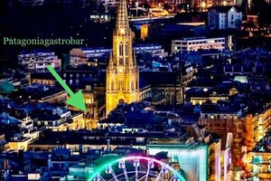
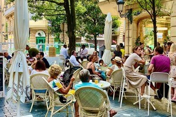
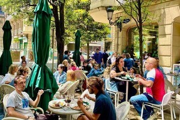
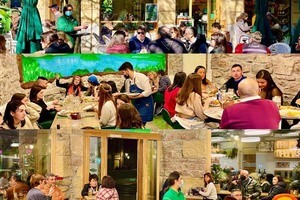
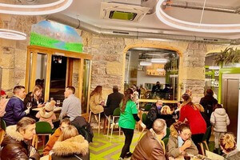
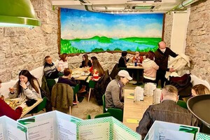

La creatividad y sabor de los pinchos y platos que ofrecemos, es fruto de los años de experiencia en la restauración. Atras, hay mimo, pasión y muchas ganas de todo el equipo Patagonia por ofrecer, productos de temporada con los mejores alimentos de nuestra tierra. La experiencia, cariño y profesionalidad en la elaboración de una carta cuidada, junto con la presentación de los platos dan claras muestras de un espiritu de equipo con ideas claras e innovadoras a la hora de nuestra variada oferta gastronomica. En Patagonia Gastrobar, nos mueve la pasion por lo que hacemos.








Situado en el corazón del centro de San Sebastián, Patagonia logra crear un espacio luminoso y aireado. Con una terraza exterior, en plena peatonal, nuestro sitio invita a degustar a propios y turistas, nuestros caracteracteristicos desayunos. Pero es solo el comienzo....ya que hay un punto y aparte en nuestra oferta de carta non stop, ya que recreamos, gran parte de la gastronomía Argentina, con una impronta y estilo abiertos, relajado y amistoso. Ongi Etorri! Bienvenidos! Bienvenue! Welcome! Benvenuto!